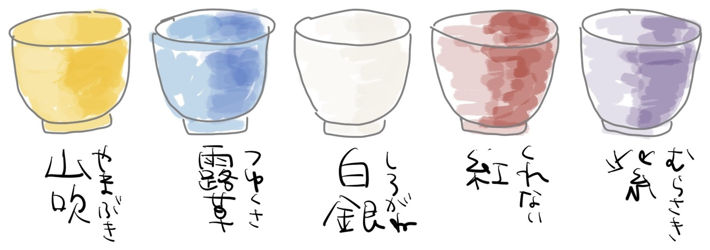

ISIS編集学校 第45期 花伝所 ／ 千夜多読仕立て
千夜千冊 言葉のマップ
夜:
絞り込み:
表示:
キーワード
ホットワード
ニューワード
キーワードのみ
ニューワードのみ
ホットワードのみ
すべて
出現回数 ≥
1
ビュー:
ネットワーク
ランキング
貫通語
ニューワード
体温計
人物録
方針
凡 例
キーワード
ホットワード
ニューワード
複数夜に登場
丸の大きさ：選択範囲内の出現人数
線の太さ・近さ：共起回数
レイアウト計算中…
DŌJŌ ／ 五茶碗
五つの道場

SENYA SENSATSU ／ 出典
選夜十冊
夜
1
1409夜
＜弱さ＞のちから
鷲田清一
→ 千夜千冊で読む
夜
2
1508夜
世阿弥の稽古哲学
西平直
→ 千夜千冊で読む
夜
3
1561夜
棟梁
小川三夫
→ 千夜千冊で読む
夜
4
1230夜
一般システム思考入門
ジェラルド・ワインバーグ
→ 千夜千冊で読む
夜
5
1060夜
生命を捉えなおす
清水博
→ 千夜千冊で読む
夜
6
1226夜
宇宙の不思議
佐治晴夫
→ 千夜千冊で読む
夜
7
1235夜
ヴィジュアル・アナロジー
バーバラ・スタフォード
→ 千夜千冊で読む
夜
8
1125夜
ボランティア
金子郁容
→ 千夜千冊で読む
夜
9
750夜
三教指帰・性霊集
空海
→ 千夜千冊で読む
夜
10
1793夜
世界制作の方法
ネルソン・グッドマン
→ 千夜千冊で読む
編集稽古 ／ 千夜多読仕立て ／ 言葉の近接度マップ